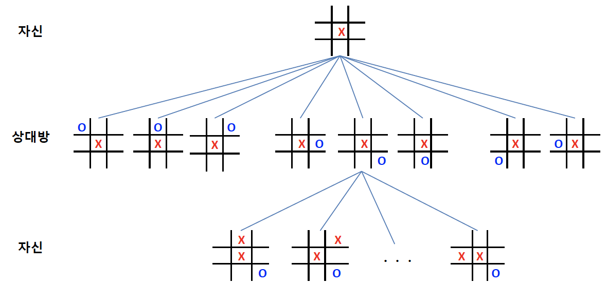

6th
게임 트리 (game tree)
상대가 있는 게임에서 자신과 상대방의 가능한 게임 상태를 나타낸 트리
- tic-tac-toc, 바둑, 장기, 체스 등
게임의 결과는 마지막에 결정
많은 수 (lookahead)를 볼 수록 유리

\(\alpha - \beta\) 가지치기 (prunning)
검토해 볼 필요가 없는 부분을 탐색하지 않도록 하는 기법
DFS로 제한 깊이까지 탐색을 하면서, max node와 min node value 결정

\(\alpha\)-자르기 (cut-off)
min node의 현재 값이 부모 노드의 현재 값보다 작거나 같으면, 나머지 자식 노드 탐색 중지
\(\beta\)-자르기
max node의 현재 값이 부모 노드의 현재 값보다 같거나 크면, 나머지 자식 노드 탐색 중지
Monte Carlo simulation
특정 확률 분포로부터 무작위 표본 (random sample)을 생성하고, 이 표본에 따라 행동을 하는 과정을 반복하여 결과를 확인하고, 이러한 결과 확인 과정을 반복하여 최종 결정을 하는 것

Monte Carlo tree search (MCTS)


탐색 공간 (search space)을 무작위 표본 추출 (random sampling)을 하면서 탐색트리를 확장하여 가장 좋아보이는 것을 선택하는 휴리스틱 탐색방법
4개 단계를 반복하여 시간이 허용하는 동안 트리 확장 및 시뮬레이션
- selection (선택)
- expansion (확장)
- simulation (시뮬레이션) - Monte Carlo simulation
- back propagation (역전파)